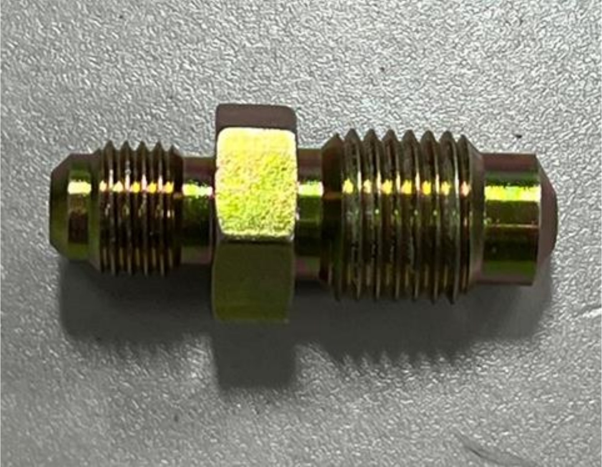
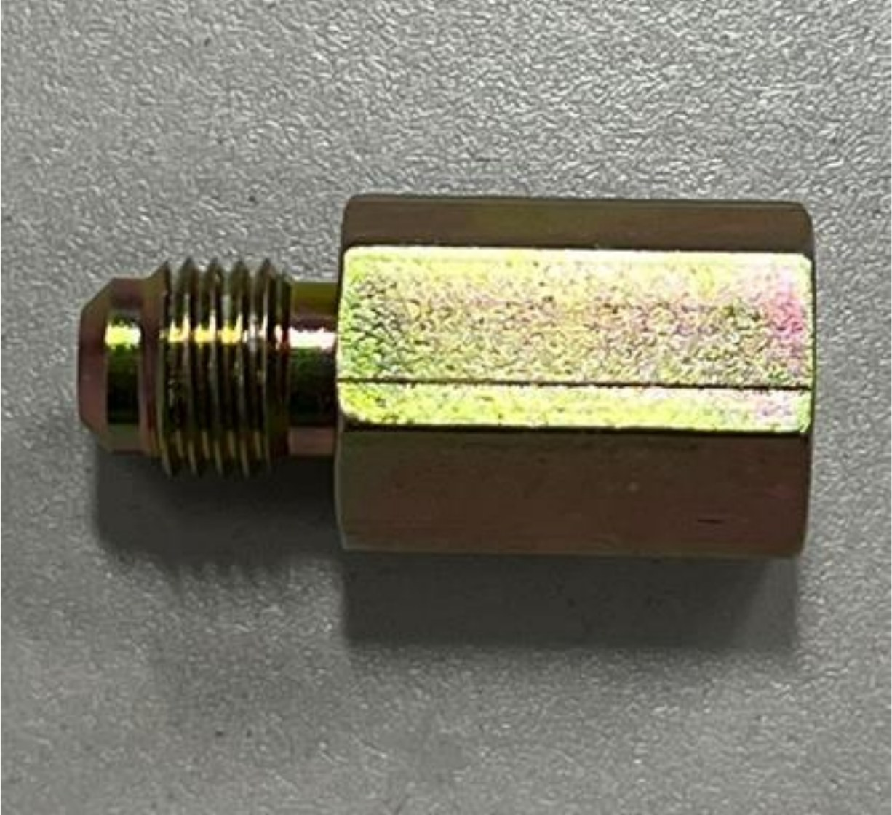

Doc no. MOC-TSB-24-02 // Vol. 24 No. 02 // Jun 14, 2024 // Fuel
Mercedes Fuel Adapters
New7306873069
A new set of adapters for Mercedes-Benz fuel line services.
What's new
The set connects to the fuel supply hose and the fuel rail, for a quick, reliable fuel system cleaning that removes deposits and improves drivability.
Contact
For more information, contact the Machine & Equipment Department at 866.244.6621.


Part numbers
| Part No. | Description | Notes |
|---|---|---|
| 73068 | Adapter, Fuel, 14 mm Male Flare | |
| 73069 | Adapter, Fuel, 14 mm Female Flare |